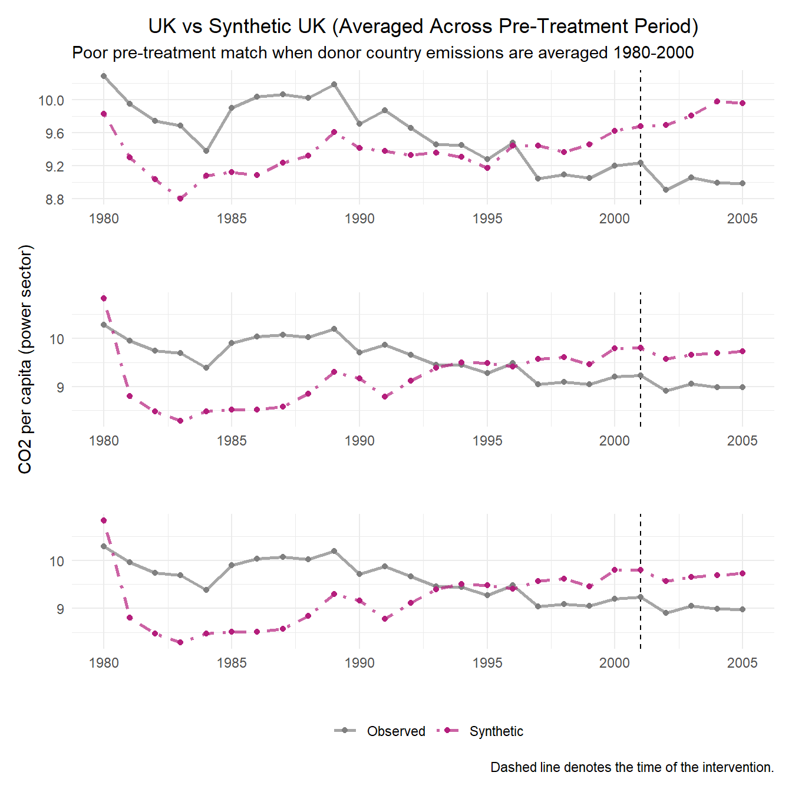
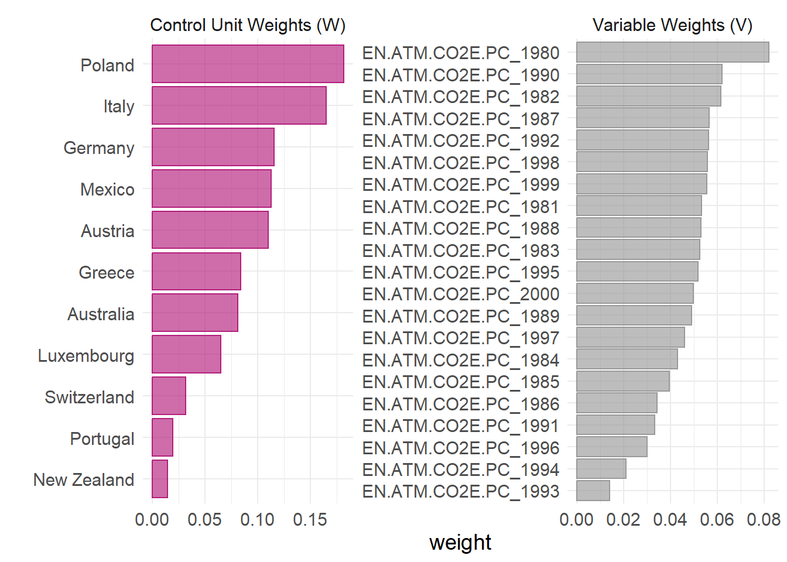
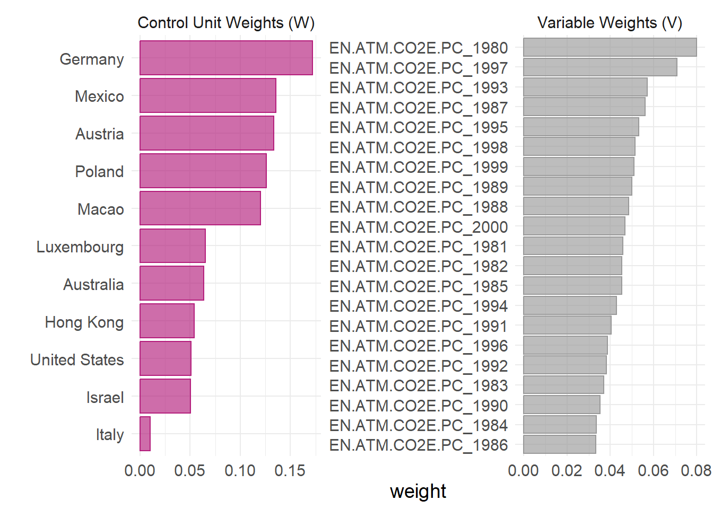
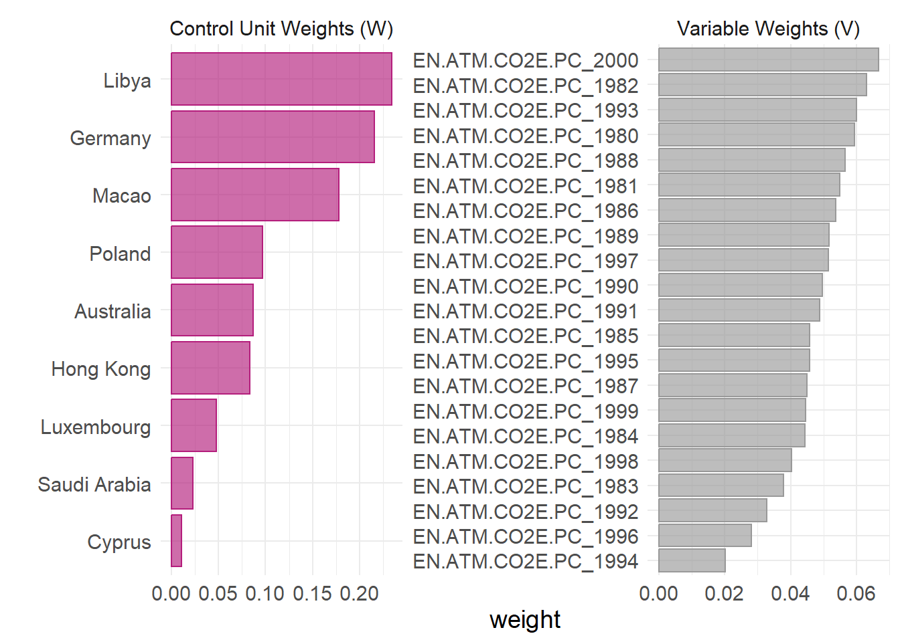
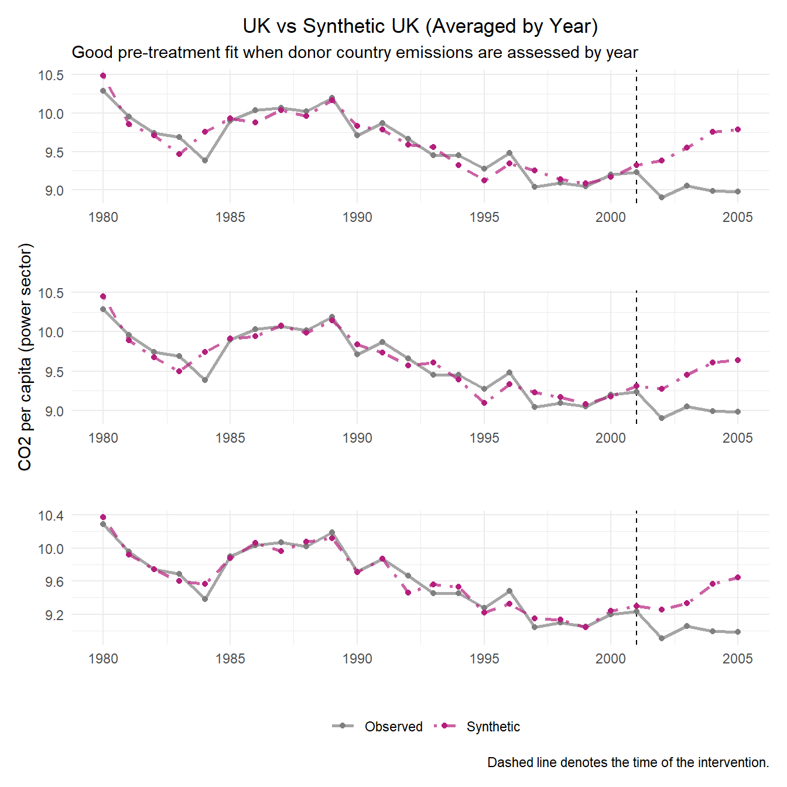
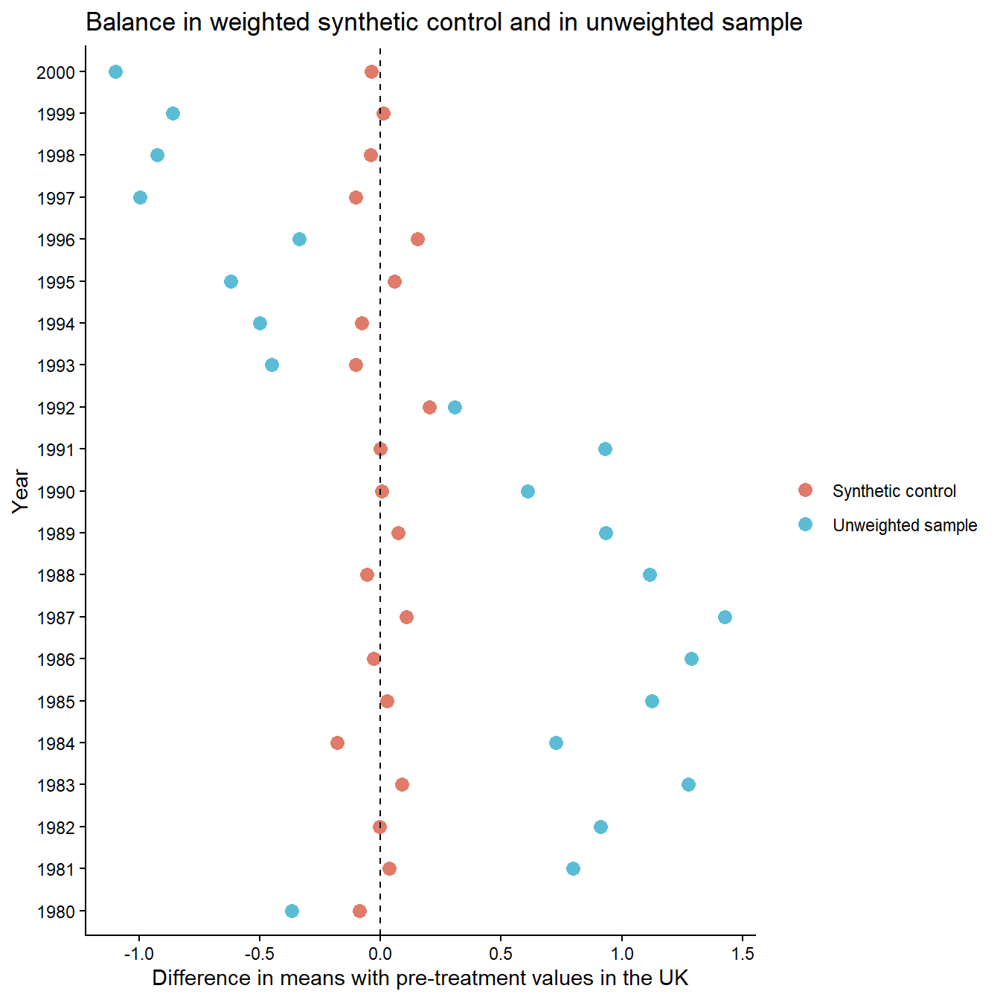

library(tidysynth) # for synthetic control
library(tidyverse)
library(patchwork) # for combining plots
library(here)Nathalie
The Study
This analysis aimed to reproduce the results from Lépissier, Alice & Mildenberger, Matto. (2021). Unilateral climate policies can substantially reduce national carbon pollution. Climatic Change. 166. 10.1007/s10584-021-03111-2. The authors employed a synthetic control method (SCM) to estimate the causal effect of the UK’s 2001 Climate Change Programme (CCP) on the country’s carbon emissions. Their findings demonstrate that CCP reduced the UK’s carbon emissions. CO2 emissions per capita were 9.8% lower in 2005 relative to what they would have been if the CCP had not been passed, demonstrating that unilateral climate policies can still reduce carbon emissions even in the absence of a binding global climate agreement.
The 2001 UK CCP is a complex reform that included a carbon tax on large-scale energy users, industry-negotiated exemptions from the tax for meeting reduction targets, and a voluntary emissions trading scheme. It was one of the first comprehensive climate reform packages passed globally, in advance of action by most other Organisation for Economic Co-operation and Development (OECD) countries. Importantly, there is a limitation to evaluating the post-policy enactment effect, as the EU emissions trading system (EU ETS) was enacted in 2005.
This positions the UK’s CCP to be evaluated against a wide pool of donor countries by pre-treatment carbon emissions. (Megan has already done this)
Data
data: all countries
data_OECD: similar economic conditions
data_OECD_HIC: + high income countries
data_OECD_HIC_UMC: + upper middle countries
Load libraries
Source function to import .Rdata files from environment
source(here("R", "load_rdata_files.R"))
# Load in any .Rdata files in directory
load_rdata_files()
source(here("R", "plot_weights_filtered.R"))Synthetic control without yearly resolution for donors
# data_OECD
scm_data_OECD0 <- data_OECD %>%
synthetic_control(
outcome = `EN.ATM.CO2E.PC`,
unit = country,
time = year,
i_unit = "United Kingdom",
i_time = 2001,
generate_placebos = TRUE) %>%
generate_predictor( # Predictors (pre-treatment averages)
time_window = 1980:2001,
mean.preT = mean(mean.preT, na.rm = TRUE)) %>%
generate_weights(
optimization_window = 1980:2001,
margin_ipop = 0.02,
sigf_ipop = 7,
bound_ipop = 6) %>%
generate_control() # Generate synthetic control
# data_OECD_HIC
scm_data_OECD_HIC0 <- data_OECD_HIC %>%
synthetic_control(
outcome = `EN.ATM.CO2E.PC`,
unit = country,
time = year,
i_unit = "United Kingdom",
i_time = 2001,
generate_placebos = TRUE) %>%
generate_predictor( # Predictors (pre-treatment averages)
time_window = 1980:2001,
mean.preT = mean(mean.preT, na.rm = TRUE)) %>%
generate_weights(
optimization_window = 1980:2001,
margin_ipop = 0.02,
sigf_ipop = 7,
bound_ipop = 6) %>%
generate_control() # Generate synthetic control
# data_OECD_HIC_UMC
scm_data_OECD_HIC_UMC0 <- data_OECD_HIC %>%
synthetic_control(
outcome = `EN.ATM.CO2E.PC`,
unit = country,
time = year,
i_unit = "United Kingdom",
i_time = 2001,
generate_placebos = TRUE) %>%
generate_predictor( # Predictors (pre-treatment averages)
time_window = 1980:2001,
mean.preT = mean(mean.preT, na.rm = TRUE)) %>%
generate_weights(
optimization_window = 1980:2001,
margin_ipop = 0.02,
sigf_ipop = 7,
bound_ipop = 6) %>%
generate_control() # Generate synthetic controlPlot Trends #1
# data_OECD
p0_data_OECD <- scm_data_OECD0 %>%
plot_trends() +
labs(title = "UK vs Synthetic UK (Averaged Across Pre-Treatment Period)",
subtitle = "Poor pre-treatment match when donor country emissions are averaged 1980-2000",
y = "",
x = "",
caption = NULL)+
theme(legend.position = "none",
plot.title = element_text(hjust = 0.5))Warning: Using `size` aesthetic for lines was deprecated in ggplot2 3.4.0.
ℹ Please use `linewidth` instead.
ℹ The deprecated feature was likely used in the tidysynth package.
Please report the issue to the authors.# data_OECD_HIC
p0_data_OECD_HIC <- scm_data_OECD_HIC0 %>%
plot_trends() +
labs(title = "",
y = "CO2 per capita (power sector)",
x = "",
caption = NULL)+
theme(legend.position = "none",
plot.title = element_text(hjust = 0.5))
# data_OECD_HIC_UMC
p0_data_OECD_HIC_UMC <- scm_data_OECD_HIC_UMC0 %>%
plot_trends() +
labs(title = "",
y = "",
x = "")
# Patchwork plots for each dataset on top of one another
p0_data_OECD / p0_data_OECD_HIC/ p0_data_OECD_HIC_UMC 
Create synthetic data with yearly emissions rather than average pretreatment
# data_OECD
scm_data_OECD <- data_OECD %>%
synthetic_control(
outcome = EN.ATM.CO2E.PC,
unit = country,
time = year,
i_unit = "United Kingdom",
i_time = 2001,
generate_placebos = TRUE) %>%
generate_predictor(time_window = 1980, EN.ATM.CO2E.PC_1980 = mean(EN.ATM.CO2E.PC)) %>%
generate_predictor(time_window = 1981, EN.ATM.CO2E.PC_1981 = mean(EN.ATM.CO2E.PC)) %>%
generate_predictor(time_window = 1982, EN.ATM.CO2E.PC_1982 = mean(EN.ATM.CO2E.PC)) %>%
generate_predictor(time_window = 1983, EN.ATM.CO2E.PC_1983 = mean(EN.ATM.CO2E.PC)) %>%
generate_predictor(time_window = 1984, EN.ATM.CO2E.PC_1984 = mean(EN.ATM.CO2E.PC)) %>%
generate_predictor(time_window = 1985, EN.ATM.CO2E.PC_1985 = mean(EN.ATM.CO2E.PC)) %>%
generate_predictor(time_window = 1986, EN.ATM.CO2E.PC_1986 = mean(EN.ATM.CO2E.PC)) %>%
generate_predictor(time_window = 1987, EN.ATM.CO2E.PC_1987 = mean(EN.ATM.CO2E.PC)) %>%
generate_predictor(time_window = 1988, EN.ATM.CO2E.PC_1988 = mean(EN.ATM.CO2E.PC)) %>%
generate_predictor(time_window = 1989, EN.ATM.CO2E.PC_1989 = mean(EN.ATM.CO2E.PC)) %>%
generate_predictor(time_window = 1990, EN.ATM.CO2E.PC_1990 = mean(EN.ATM.CO2E.PC)) %>%
generate_predictor(time_window = 1991, EN.ATM.CO2E.PC_1991 = mean(EN.ATM.CO2E.PC)) %>%
generate_predictor(time_window = 1992, EN.ATM.CO2E.PC_1992 = mean(EN.ATM.CO2E.PC)) %>%
generate_predictor(time_window = 1993, EN.ATM.CO2E.PC_1993 = mean(EN.ATM.CO2E.PC)) %>%
generate_predictor(time_window = 1994, EN.ATM.CO2E.PC_1994 = mean(EN.ATM.CO2E.PC)) %>%
generate_predictor(time_window = 1995, EN.ATM.CO2E.PC_1995 = mean(EN.ATM.CO2E.PC)) %>%
generate_predictor(time_window = 1996, EN.ATM.CO2E.PC_1996 = mean(EN.ATM.CO2E.PC)) %>%
generate_predictor(time_window = 1997, EN.ATM.CO2E.PC_1997 = mean(EN.ATM.CO2E.PC)) %>%
generate_predictor(time_window = 1998, EN.ATM.CO2E.PC_1998 = mean(EN.ATM.CO2E.PC)) %>%
generate_predictor(time_window = 1999, EN.ATM.CO2E.PC_1999 = mean(EN.ATM.CO2E.PC)) %>%
generate_predictor(time_window = 2000, EN.ATM.CO2E.PC_2000 = mean(EN.ATM.CO2E.PC)) %>%
generate_weights(optimization_window = 1980:2001) %>%
generate_control()
# data_OECD_HIC
scm_data_OECD_HIC <- data_OECD_HIC %>%
synthetic_control(
outcome = EN.ATM.CO2E.PC,
unit = country,
time = year,
i_unit = "United Kingdom",
i_time = 2001,
generate_placebos = TRUE) %>%
generate_predictor(time_window = 1980, EN.ATM.CO2E.PC_1980 = mean(EN.ATM.CO2E.PC)) %>%
generate_predictor(time_window = 1981, EN.ATM.CO2E.PC_1981 = mean(EN.ATM.CO2E.PC)) %>%
generate_predictor(time_window = 1982, EN.ATM.CO2E.PC_1982 = mean(EN.ATM.CO2E.PC)) %>%
generate_predictor(time_window = 1983, EN.ATM.CO2E.PC_1983 = mean(EN.ATM.CO2E.PC)) %>%
generate_predictor(time_window = 1984, EN.ATM.CO2E.PC_1984 = mean(EN.ATM.CO2E.PC)) %>%
generate_predictor(time_window = 1985, EN.ATM.CO2E.PC_1985 = mean(EN.ATM.CO2E.PC)) %>%
generate_predictor(time_window = 1986, EN.ATM.CO2E.PC_1986 = mean(EN.ATM.CO2E.PC)) %>%
generate_predictor(time_window = 1987, EN.ATM.CO2E.PC_1987 = mean(EN.ATM.CO2E.PC)) %>%
generate_predictor(time_window = 1988, EN.ATM.CO2E.PC_1988 = mean(EN.ATM.CO2E.PC)) %>%
generate_predictor(time_window = 1989, EN.ATM.CO2E.PC_1989 = mean(EN.ATM.CO2E.PC)) %>%
generate_predictor(time_window = 1990, EN.ATM.CO2E.PC_1990 = mean(EN.ATM.CO2E.PC)) %>%
generate_predictor(time_window = 1991, EN.ATM.CO2E.PC_1991 = mean(EN.ATM.CO2E.PC)) %>%
generate_predictor(time_window = 1992, EN.ATM.CO2E.PC_1992 = mean(EN.ATM.CO2E.PC)) %>%
generate_predictor(time_window = 1993, EN.ATM.CO2E.PC_1993 = mean(EN.ATM.CO2E.PC)) %>%
generate_predictor(time_window = 1994, EN.ATM.CO2E.PC_1994 = mean(EN.ATM.CO2E.PC)) %>%
generate_predictor(time_window = 1995, EN.ATM.CO2E.PC_1995 = mean(EN.ATM.CO2E.PC)) %>%
generate_predictor(time_window = 1996, EN.ATM.CO2E.PC_1996 = mean(EN.ATM.CO2E.PC)) %>%
generate_predictor(time_window = 1997, EN.ATM.CO2E.PC_1997 = mean(EN.ATM.CO2E.PC)) %>%
generate_predictor(time_window = 1998, EN.ATM.CO2E.PC_1998 = mean(EN.ATM.CO2E.PC)) %>%
generate_predictor(time_window = 1999, EN.ATM.CO2E.PC_1999 = mean(EN.ATM.CO2E.PC)) %>%
generate_predictor(time_window = 2000, EN.ATM.CO2E.PC_2000 = mean(EN.ATM.CO2E.PC)) %>%
generate_weights(optimization_window = 1980:2001) %>%
generate_control()
# data_OECD_HIC_UMC
scm_data_OECD_HIC_UMC <- data_OECD_HIC_UMC %>%
synthetic_control(
outcome = EN.ATM.CO2E.PC,
unit = country,
time = year,
i_unit = "United Kingdom",
i_time = 2001,
generate_placebos = TRUE) %>%
generate_predictor(time_window = 1980, EN.ATM.CO2E.PC_1980 = mean(EN.ATM.CO2E.PC)) %>%
generate_predictor(time_window = 1981, EN.ATM.CO2E.PC_1981 = mean(EN.ATM.CO2E.PC)) %>%
generate_predictor(time_window = 1982, EN.ATM.CO2E.PC_1982 = mean(EN.ATM.CO2E.PC)) %>%
generate_predictor(time_window = 1983, EN.ATM.CO2E.PC_1983 = mean(EN.ATM.CO2E.PC)) %>%
generate_predictor(time_window = 1984, EN.ATM.CO2E.PC_1984 = mean(EN.ATM.CO2E.PC)) %>%
generate_predictor(time_window = 1985, EN.ATM.CO2E.PC_1985 = mean(EN.ATM.CO2E.PC)) %>%
generate_predictor(time_window = 1986, EN.ATM.CO2E.PC_1986 = mean(EN.ATM.CO2E.PC)) %>%
generate_predictor(time_window = 1987, EN.ATM.CO2E.PC_1987 = mean(EN.ATM.CO2E.PC)) %>%
generate_predictor(time_window = 1988, EN.ATM.CO2E.PC_1988 = mean(EN.ATM.CO2E.PC)) %>%
generate_predictor(time_window = 1989, EN.ATM.CO2E.PC_1989 = mean(EN.ATM.CO2E.PC)) %>%
generate_predictor(time_window = 1990, EN.ATM.CO2E.PC_1990 = mean(EN.ATM.CO2E.PC)) %>%
generate_predictor(time_window = 1991, EN.ATM.CO2E.PC_1991 = mean(EN.ATM.CO2E.PC)) %>%
generate_predictor(time_window = 1992, EN.ATM.CO2E.PC_1992 = mean(EN.ATM.CO2E.PC)) %>%
generate_predictor(time_window = 1993, EN.ATM.CO2E.PC_1993 = mean(EN.ATM.CO2E.PC)) %>%
generate_predictor(time_window = 1994, EN.ATM.CO2E.PC_1994 = mean(EN.ATM.CO2E.PC)) %>%
generate_predictor(time_window = 1995, EN.ATM.CO2E.PC_1995 = mean(EN.ATM.CO2E.PC)) %>%
generate_predictor(time_window = 1996, EN.ATM.CO2E.PC_1996 = mean(EN.ATM.CO2E.PC)) %>%
generate_predictor(time_window = 1997, EN.ATM.CO2E.PC_1997 = mean(EN.ATM.CO2E.PC)) %>%
generate_predictor(time_window = 1998, EN.ATM.CO2E.PC_1998 = mean(EN.ATM.CO2E.PC)) %>%
generate_predictor(time_window = 1999, EN.ATM.CO2E.PC_1999 = mean(EN.ATM.CO2E.PC)) %>%
generate_predictor(time_window = 2000, EN.ATM.CO2E.PC_2000 = mean(EN.ATM.CO2E.PC)) %>%
generate_weights(optimization_window = 1980:2001) %>%
generate_control()scm_data_OECD %>%
grab_unit_weights() %>%
arrange(desc(weight)) %>%
filter(weight > 0.01)# A tibble: 11 × 2
unit weight
<chr> <dbl>
1 Poland 0.182
2 Italy 0.165
3 Germany 0.116
4 Mexico 0.112
5 Austria 0.110
6 Greece 0.0838
7 Australia 0.0813
8 Luxembourg 0.0652
9 Switzerland 0.0319
10 Portugal 0.0194
11 New Zealand 0.0144scm_data_OECD_HIC %>%
grab_unit_weights() %>%
arrange(desc(weight)) %>%
filter(weight > 0.01)# A tibble: 11 × 2
unit weight
<chr> <dbl>
1 Germany 0.172
2 Mexico 0.136
3 Austria 0.133
4 Poland 0.126
5 Macao 0.120
6 Luxembourg 0.0654
7 Australia 0.0639
8 Hong Kong 0.0541
9 United States 0.0507
10 Israel 0.0506
11 Italy 0.0103scm_data_OECD_HIC_UMC %>%
grab_unit_weights() %>%
arrange(desc(weight)) %>%
filter(weight > 0.01)# A tibble: 9 × 2
unit weight
<chr> <dbl>
1 Libya 0.234
2 Germany 0.216
3 Macao 0.178
4 Poland 0.0967
5 Australia 0.0867
6 Hong Kong 0.0834
7 Luxembourg 0.0479
8 Saudi Arabia 0.0230
9 Cyprus 0.0107scm_data_OECD %>%
plot_weights_filtered()
scm_data_OECD_HIC %>%
plot_weights_filtered()
scm_data_OECD_HIC_UMC %>%
plot_weights_filtered()
Plot trends by year and country
# data_OECD
p1_data_OECD <- scm_data_OECD %>%
plot_trends() +
labs(title = "UK vs Synthetic UK (Averaged by Year)",
subtitle = "Good pre-treatment fit when donor country emissions are assessed by year",
y = "",
x = "",
caption = NULL)+
theme(legend.position = "none",
plot.title = element_text(hjust = 0.5))
# data_OECD_HIC
p1_data_OECD_HIC <- scm_data_OECD_HIC %>%
plot_trends() +
labs(title = "",
y = "CO2 per capita (power sector)",
x = "",
caption = NULL) +
theme(legend.position = "none")
# data_OECD_HIC_UMC
p1_data_OECD_HIC_UMC <- scm_data_OECD_HIC_UMC %>%
plot_trends() +
labs(title = "",
y = "",
x = "")
p1_data_OECD / p1_data_OECD_HIC / p1_data_OECD_HIC_UMC
Plot Gaps (Treatment Effect)
scm_data_OECD_HIC_UMC %>%
filter(.id == "United Kingdom", .placebo == 0) %>%
pull(.synthetic_control) %>%
.[[1]] %>%
mutate(gap = real_y - synth_y) %>%
filter(time_unit >= 2001)# A tibble: 5 × 4
time_unit real_y synth_y gap
<int> <dbl> <dbl> <dbl>
1 2001 9.23 9.30 -0.0645
2 2002 8.90 9.25 -0.347
3 2003 9.05 9.33 -0.276
4 2004 8.99 9.57 -0.578
5 2005 8.98 9.64 -0.658 MSPE Ratios
scm_data_OECD %>%
grab_significance() %>%
filter(unit_name == "United Kingdom")# A tibble: 1 × 8
unit_name type pre_mspe post_mspe mspe_ratio rank fishers_exact_pvalue
<chr> <chr> <dbl> <dbl> <dbl> <int> <dbl>
1 United Kingdom Treat… 0.0193 0.427 22.1 2 0.0870
# ℹ 1 more variable: z_score <dbl>scm_data_OECD_HIC %>%
grab_significance() %>%
filter(unit_name == "United Kingdom")# A tibble: 1 × 8
unit_name type pre_mspe post_mspe mspe_ratio rank fishers_exact_pvalue
<chr> <chr> <dbl> <dbl> <dbl> <int> <dbl>
1 United Kingdom Treat… 0.0175 0.276 15.8 7 0.212
# ℹ 1 more variable: z_score <dbl>scm_data_OECD_HIC_UMC %>%
grab_significance() %>%
filter(unit_name == "United Kingdom")# A tibble: 1 × 8
unit_name type pre_mspe post_mspe mspe_ratio rank fishers_exact_pvalue
<chr> <chr> <dbl> <dbl> <dbl> <int> <dbl>
1 United Kingdom Treat… 0.00786 0.241 30.6 3 0.0577
# ℹ 1 more variable: z_score <dbl>scm_data_OECD_HIC_UMC %>%
grab_significance() %>%
filter(pre_mspe < 5 * min(pre_mspe[type == "Treated"])) %>%
arrange(desc(mspe_ratio))# A tibble: 14 × 8
unit_name type pre_mspe post_mspe mspe_ratio rank fishers_exact_pvalue
<chr> <chr> <dbl> <dbl> <dbl> <int> <dbl>
1 United Kingdom Trea… 0.00786 0.241 30.6 3 0.0577
2 Argentina Donor 0.00644 0.118 18.4 7 0.135
3 Spain Donor 0.0169 0.280 16.6 8 0.154
4 Italy Donor 0.00326 0.0450 13.8 9 0.173
5 Greece Donor 0.0275 0.352 12.8 10 0.192
6 Austria Donor 0.0358 0.325 9.07 11 0.212
7 Macao Donor 0.0223 0.118 5.28 14 0.269
8 Mexico Donor 0.0151 0.0699 4.62 18 0.346
9 Japan Donor 0.0253 0.0852 3.37 21 0.404
10 Cyprus Donor 0.0246 0.0776 3.16 23 0.442
11 Brazil Donor 0.0203 0.0625 3.08 24 0.462
12 Turkey Donor 0.0168 0.0496 2.96 26 0.5
13 France Donor 0.0187 0.0128 0.684 42 0.808
14 Switzerland Donor 0.0195 0.00387 0.199 48 0.923
# ℹ 1 more variable: z_score <dbl>Finding difference in means with pre-treatment values- this is our main result
scm_data_OECD_HIC_UMC %>%
# Extract values from balance table
grab_balance_table() %>%
# Get differences between actual UK and synthetic and compare to donor differences
mutate(
synth_diff = `United Kingdom` - `synthetic_United Kingdom`,
donor_diff = `United Kingdom` - donor_sample,
year = as.integer(str_extract(variable, "\\d{4}"))
) %>%
# Make into a tidy data format
pivot_longer(
cols = c(synth_diff, donor_diff),
names_to = "type",
values_to = "diff"
) %>%
# Recode values to match those in paper result
mutate(type = recode(type, "synth_diff" = "Synthetic control", "donor_diff" = "Unweighted sample")) %>%
# Plot
ggplot(aes(x = diff, y = factor(year), color = type)) +
geom_point(size = 3) +
geom_vline(xintercept = 0, linetype = "dashed") +
# Match colors used by paper figure
scale_color_manual(values = c(
"Synthetic control" = "#E07B6A",
"Unweighted sample" = "#5BBCD6"
)) +
labs(
x = "Difference in means with pre-treatment values in the UK",
y = "Year",
# Take out legend title the lazy way
color = "",
title = "Balance in weighted synthetic control and in unweighted sample"
) +
# Get all the lines out
theme_classic()